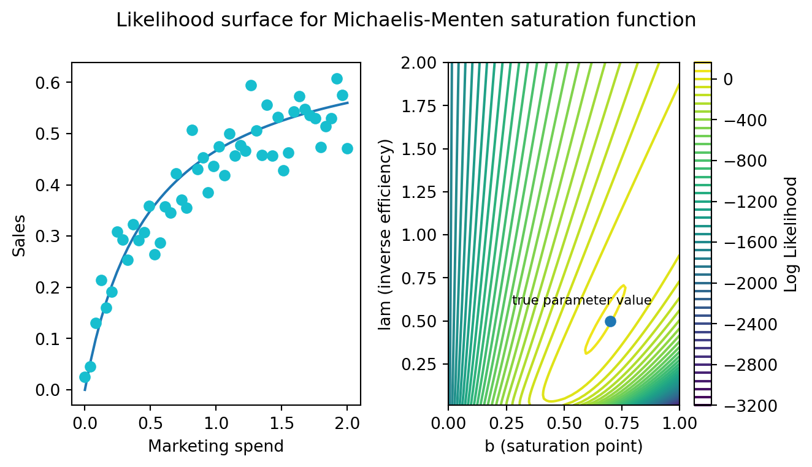
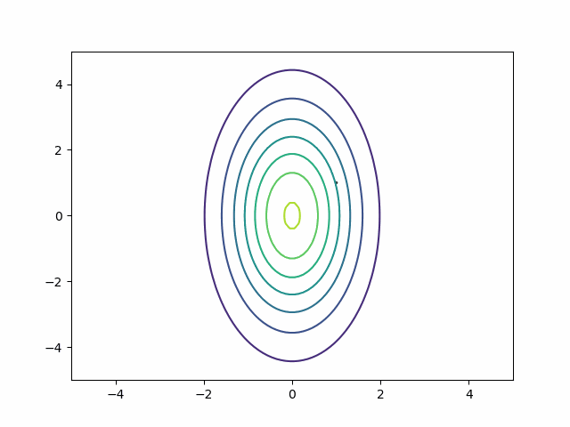
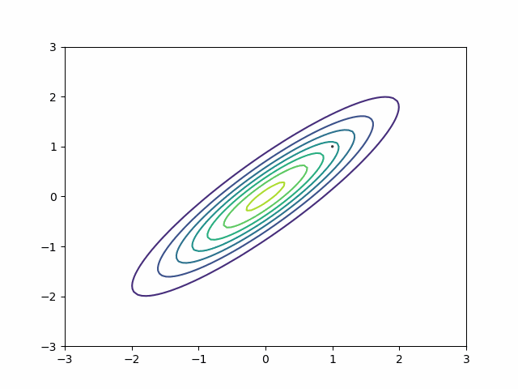

How to sample an MMM as fast as possible
And learn about HMC’s mass matrix along the way.
You find yourself in a gorgeous Airbnb. You are on a Zoom meeting, hiding the Wayfair decor behind a virtual background, a blurry image of your actual office. You are embarrassed. You forgot to tell your boss you booked a vacation. They asked for preliminary results they can share with their boss tomorrow morning. You just needed 1,000 usable samples from the posterior of this MMM. But you don’t have them. Hamiltonian Monte Carlo glided through the parameter space like a snail on a hot sidewalk. The progress bar told you 10 minutes. Then 10 hours. You ended up waiting an hour and a half for these samples. When your results came back, the effective sample size diagnostic said you only have 80 good samples. Your boss wants answers. Their boss wants answers. You promise to get better results and hang up the call. Your palms are sweaty. Your brow is damp. You crank the number of draws up to 10,000, slam ctrl+enter, and pray the inference doesn’t cook your processor overnight.
The promise of probabilistic programming systems is that modelers can focus on the model and ignore the messy details of inference. This puts modelers in an awkward spot when the sampler underperforms. You have been told to almost always use the default settings of the sampler and have developed a mental block against learning about the details of how Hamiltonian Monte Carlo (HMC) actually works. You know the folk theorem of statistical computing: “the problem isn’t the sampler, the problem is your model”, blah blah blah. But you cannot change the model. The Stakeholders asked for an MMM, and an MMM shall be delivered.
I think it’s quite common that MMMs need non-default settings for inference. The challenges with sampling them do not arise from the usual places where you can make tweaks: choices of prior families, parameterizations, that sort of stuff. This is exactly the edge case where the modeler needs to know the details of how inference works and use non-default settings. Unfortunately, if you follow the folk theorem too stringently, you’ll waste hours trying to “fix” the model.
Our plan is to figure out where those 920 missing samples went. I’ll show you that the default inference settings struggle with the posterior geometry of MMMs, even in simple models with good data. MMMs naturally have posterior correlations between their parameters and strong correlations are difficult to sample from. That will lead us to a conversation about how to optimize HMC for MMMs and some nice intuitions for the behaviour of different mass matrix adaptation schemes.
Dude, where’s my samples?
You have a healthy quantity and distribution of data for a single channel. You’ll model the behaviour of the channel with a Michaelis-Menten function. Here is what the data looks like and the corresponding likelihood surface over the two primary parameters. A blue dot marks the true location of the parameters.
Here’s a simple Bayesian model to estimate those parameters. I’m putting uniform priors over our main parameters to exaggerate the problem. Today, inference will be driven entirely by the shape of the likelihood surface1.
with pm.Model() as m0:
b = pm.Uniform('saturation_point',lower=0,upper=2)
c = pm.Uniform("efficiency",lower=0.01,upper=4)
sigma = pm.Exponential("sigma",scale=1)
marketing_effect = saturation(x,b=b,c=c)
sales = pm.Normal('sales',mu=marketing_effect,sigma=sigma,observed=y)
compiled_model = nutpie.compile_pymc_model(m0)If you ask an HMC algorithm for 10,000 draws from the posterior, the effective sample size diagnostic tells you only about 20% of them are any good.
Effective Sample Size (ESS) Statistics:
=====================================
Efficiency ESS: 2,031 / 10,000
Saturation Point ESS: 2,066 / 10,000Effective sample size depends on the amount of auto-correlation between samples. In the ideal Markov Chain Monte Carlo, the location of the first sample has no impact on the probable locations for the second parameter. In practice, MCMC algorithms tend to have an easier time sampling neighboring locations over distant ones. MCMC tuning aims to minimize that tendency. ESS, then, is what it says on the label-how many samples do you have, effectively, after discounting your samples by the amount of autocorrelation? If you wouldn’t trust a survey with 30 respondents, then you shouldn’t trust a chain with 30 effective samples.
ESS is not really a problem of biased or high variance estimates. Unlike the survey of 30 participants, you can just run the chain longer. If you run it long enough, the chain will visit every region of the posterior. But it is a problem for speed. You should think about posterior sampling speed in terms of: “what is the minimal amount of time I have to run the algorithm to get the desired number of samples?” If you need 1,000 effective samples and that requires taking 5,000 draws, then there is major room for improvement in runtime. One easy way to speed up an MCMC algorithm is to just take fewer draws but ensure every draw counts.
What’s a mass matrix?
You can quickly get an intuition for the connection between the ESS and correlated posteriors by looking at a slightly different problem. Suppose you are sampling from two normal distributions, but they have different scales. One distribution has \(\sigma = 1\), and the other has \(\sigma = 5\). How big should the step size of the HMC sampler be? It’s a tricky question because each dimension would prefer a different step size. In the horizontal direction, you want small steps. You need to be able to track the quickly changing curvature from east to west. In the vertical direction, you want big steps. You have to cross a large distance to get from north to south.

Unfortunately, HMC has only a single step size parameter. Absent intervention, tuning will push it downward to accommodate the smaller dimension2. That’s a problem for two reasons:
- Auto-correlation. If you cannot take big steps, then you cannot de-correlate the samples. Your current location will probably influence your next location.
- Gradient evaluations. When the step size is small, you have to take more steps to cover the same distance. More steps mean more gradient evaluations and those are the major computational expense of running HMC.
A well-tune HMC should do exactly the opposite–a few big steps per draw.
There is a trick to solve this problem: the mass matrix adaption. HMC takes a draw from a multivariate normal distribution at the beginning of a new trajectory. This draw tells us the starting momentum vector. The idea of the mass matrix adaptation is that HMC should typically draw larger momenta in the north-south direction than it does in the east-west direction. So we pass (or estimate during tuning) a covariance matrix to that multivariate normal. In the basic case, the covariance matrix only has diagonal entries, and they represent the scale of the parameter space in that direction. In other words, we can just use this mass matrix to generate the momenta:
\[ \begin{bmatrix} 5 & 0\\ 0 & 1 \end{bmatrix} \]
The mass matrix solves the riddle about the best step size. Each step covers more vertical than horizontal distance. HMC can return to running with a few big steps. Auto-correlation disappears.
We can generalize the mass matrix strategy to handle posterior correlation. Suppose my distribution is a multivariate normal with this covariance matrix:
\[ \begin{bmatrix} 1 & 0.9\\ 0.9 & 1 \end{bmatrix} \]
Naive HMC never leaves the upper right quadrant. These samples will be autocorrelated. This is precisely the reason ESS is so bad on the MMM in the section above.

By default, in most probabilistic programming libraries3, the mass matrix adaptation only tries to adjust for scale differences, not for covariances. In other words, it will adjust the diagonal entries of the mass matrix and leave the off-diagonal as zeros. But if you change the settings, you can get a dense mass matrix adjustment where the mass matrix includes off-diagonal entries to capture correlation. It samples this distribution beautifully.
This is all about HMC. What about variational inference?
Variational inference has an analog to the diagonal vs dense mass matrix distinction. The mean-field approximation is like a diagonal mass matrix while the full-rank approximation is like a dense mass matrix. If you have the mean-field approximation on, instead of sampling poorly, it will approximate the posterior poorly. MMMs should use the full-rank approximation by default.
Dude, here’s your samples
Here’s the story so far: MMMs have a correlated posterior by default. HMC doesn’t adapt for that by default. So we should expect sampling to be a bit rough. But if we turn on a dense adaptation, we now get to keep every sample.
Effective Sample Size (ESS) Statistics:
=====================================
Efficiency ESS: 10,474 / 10,000
Saturation Point ESS: 10,369 / 10,000Comically, it tells us we have more effective samples than we asked for. It arises because our draws our anti-correlated and, I’m told, that is not a problem.
The speed-up is even better than just maximizing ESS. In the original MMM example, it took about 15 gradient evaluations per draw (or 15 steps). In this example, we’ve doubled our step size and are now taking only 3 about steps per draw.
Two notes about scaling
Dense mass matrix adjustments offer another benefit. When modeling multiple marketing channels, the channels will typically be correlated with each other. Marketers work by running campaigns for short periods of time across multiple channels. Multi-channel campaigns are now recommended strategy by some popular ad planning platforms. They’ll run the same ad on Facebook, Tiktok, and Youtube for 4 weeks and then turn it off. The result is that you should expect correlations between and within channel parameters. So the dense mass matrix plays double duty.
Estimating and applying the dense mass matrix is not free. The diagonal mass matrix is pretty cheap because it’s just a vector of parameters of length \(n\), where \(n\) is the number of parameters in your model. The dense matrix is \((n, n)\). We have to estimate the covariance between parameters during tuning, and we have to sample momenta from a large multivariate normal, once per draw. So you should expect tuning to be a bit slower. If all goes well, we’ll make up for it by taking bigger steps, fewer steps, and get to our target ESS much faster. It is worth appreciating that we are trading off different sorts of computational speed, though, and mileage may vary for your problem. If the posterior correlations aren’t very big, then extra expense of tracking a dense mass matrix might not be worth it. My favourite HMC sampling library, Nutpie, also allows you to round some small correlations down to zero and adjust the threshold at which you do so.
Footnotes
A cool and non-obvious reason to use non-uniform priors is precisely because it mitigates the problem I’m exploring in this post. The correlation in the posterior is entirely driven by the correlation in the likelihood surface. But there is no correlation between the priors; they are independent. Including prior information partially de-correlates the posterior.↩︎
HMC tuning is trying to balance the amount of error in its numerical simulation of trajectories against the goal of efficiency. A tiny step size has almost no error. HMC has to keep the error in an acceptable range across all parameters. So it tends to be the most difficult parameter to sample that controls the tuning process.↩︎
At least Stan, Nutpie, PyMC, and Numpyro have this default.↩︎